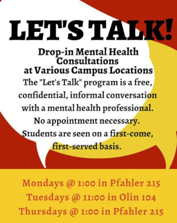

CS 173: Intro To Computer Science
Ursinus College, Spring 2020
Instructor: Christopher J. Tralie
Course Evolving: Site Last Updated 6/24/2020
Class Times / Locations
-
Section 1
- Lecture: Monday/Wednesday 1:30-2:45PM Pfahler Hall, Room 012
- Lab Tuesday 12-12:50PM Pfahler Hall, Room 012
-
Section 2
- Lecture: Monday/Wednesday 3:00-4:15PM Pfahler Hall, Room 012
- Lab Tuesday 1:30-2:20 PM Pfahler Hall, Room 012
- Lecture: Monday/Wednesday 1:30-2:45PM Pfahler Hall, Room 012
- Lab Tuesday 12-12:50PM Pfahler Hall, Room 012
- Lecture: Monday/Wednesday 3:00-4:15PM Pfahler Hall, Room 012
- Lab Tuesday 1:30-2:20 PM Pfahler Hall, Room 012
Office Hours (in Pfahler 101J)
-
Monday 4:30 PM - 5:30 PM
-
Tuesday 3:30 PM - 5:30 PM
-
Wednesday 10:00 AM - 11:00AM, 4:30 PM - 5:30 PM
-
Thursday 10:00 AM - 11:00 AM
Virtual Office Hours
- 8:00PM - 9:00PM Monday/Wednesday on Microsoft Teams
Overview
Computer science is the study of how machines interact with data and the way in which machines can be used to solve problems. It is a mathematical discipline, but one which is often much more "hands on" than most fields of math. One important aspect of computer science is computer programming, or the process of writing code, or instructions for a computer to execute in a language a computer can understand. With programming languages, we can tell the computer how to automate calculations that are tedious and slow for humans to do by hand, and how to translate algorithms (recipes to solve problems) into code. In this course, we will learn one such language called Java, and we will use this language to explore an interdisciplinary array of computer science problems, including but not limited to:
- How to encrypt data and hide information.
- How to make computer generated art and music.
- How to efficiently store and manipulate records.
- How to make simple video games.
A word on patience and debugging
Computer programming can often be frustrating, since not only do computers have very little tolerance for mistakes in their language (so-called "syntax errors") that will cause a program to not even run, but even if you manage to get a program to run, it still may not behave as you were intending it to. Computers will do exactly what you tell them to do in code, so you will have to figure out where you told the computer something different from what you intended. This process is called debugging, and it is time consuming and difficult even for very experienced programmers. So do not be hard on yourself if your programs don't work the first time around (they rarely do, even if you've been programming for decades!). But be sure you leave yourself adequate time to work on the assignments, because the amount of time it takes to resolve issues can be unpredictable.
As part of embracing the process of debugging, we will be creating a "debugging table" throughout the course, in which students catalog particular error messages that arise for different types of mistakes.
Inevitably, you will fall into this trap. So don't beat yourself up too much when you do...but do listen to the advice!
Me: I'm stuck on a bug. What do I do
— Madison Kanna (@Madisonkanna) January 17, 2020
Other developers: Take a break. Walk away. Go outside. Sleep on it and come back to it the next day.
Me: *Sits at desk obsessing over bug until 2AM*
A word on background and inclusivity
It is often the case that some students have had a good amount of programming experience before they start this course, either as part of a high school curriculum or on their own. However, no prior knowledge whatsoever is assumed, so we start from scratch. It is a human tendency to show off how smart or knowledgeable we are to let everyone around us know, but please avoid asking leading questions and distracting the class if you have had prior experience; it can be very discouraging to people who have not seen the material before, and it can quickly poison a classroom environment. If there's an advanced topic you would like to discuss, my office door is open, and I can give you a nearly unlimited supply of extra things to challenge you. But please keep it to yourself. I also expect those of you with more experience to help those in our community who are new. Conversely, if this is brand new to you, do not worry! Some of our best senior computer science majors at Ursinus started off in 173 with no experience, and our goals is to get everyone on the same page in this course.
Learning Goals
- Implement and engineer multi-component systems that solve real world problems.
- Articulate the difference between computer programming and computer science, and explain the role of programming in computer science.
- Learn to be a patient problem solver by developing comfort with the edit -> compile -> run loop, along with basic debugging skills.
- Identify the appropriate control structures (if statements, switch statements, loop types) to use to solve different problems, and learn to choose efficient solutions over brute force solutions. As stated in Harvey Mudd's CS For All Book "An important principle in computer science is “if you are building lots of very similar things, try instead to build one thing that can do it all.”"
Prerequisites/Requirements
No prior programming experience is assumed! People from all backgrounds with all levels of experience are welcome. As long as you have a laptop that was manufactured within the past 10 years, you will be able to do all of the assignments and participate in class.
Help Room
The math help room (Pfahler 102) is a great place to go if you are struggling. Students who have previously taken the course will be there to help you with the assignments. Click here to read more information about the help room. I will make the schedule available here once it has been finalized. The hours are shown below:
Lab T.A.s
Lab T.A.s will help me to run the labs each week, and they will also be responsible for grading the labs. They will each have 2 hours of office hours in the math help room outside of lab each week.
Sean Bennett | Rachel Thornton |
7PM - 9PM Thursdays, Math Help Room |
11AM - 1PM Fridays, Math Help Room |
Canvas / Microsoft Teams
We will be using Canvas, but only to submit labs and to store all of the grades.
For all other discussions and announcements for the course, we will be using Microsoft Teams, which is linked to your Office suite through Ursinus, so you are automatically enrolled. There you can ask and answer questions about the lecture content and assignments. Since it is likely that students will have similar questions, it is much more efficient for me to answer them there so the whole class can see the answer, so it is possible that I will ask you to re-send a question on Microsoft Teams that I get in e-mail (please do not be shy or take it personally if I do so; it means it was a great question and worth sharing with everyone!). There will be an anonymous option at the top of every chatroom to help facilitate this.
Microsoft Teams Communication Policy
Since this is a class-wide communication, the following rules apply to Microsoft Teams- Students are expected to be respectful and mindful of the classroom environment and inclusivity standards. They are equally applicable to a virtual environment as they are in class.
- Students are not permitted to share direct answers or questions which might completely give away answers to any homework problems or labs publicly on Microsoft Teams. When in doubt, please send me a direct message there.
- I will attempt to answer questions real time during my virtual office hours. Otherwise, I will make every attempt to respond within 24 hours on weekdays, at any time before 9PM. I cannot be expected to respond at all on Saturdays or Sundays, so please plan accordingly. (Of course, students can and should still respond to each other outside of these intervals, when appropriate. This could be an opportunity to earn grace points!).
- Students may ask anonymous questions by following a link to a survey at the top of each channel.
Readings
The official textbook for this course is
- Cay Horstmann. Java For Everyone: Late Objects, 2nd Edition. ISBN-13: 978-1-118-06331-6.
NOTE: The cost of the Horstmann book may be prohibitive for some students, so please note that renting the book is much cheaper. Please communicate as early as possible if you are having trouble obtaining the book, rather than keeping this to yourself, so that we can work on a solution together.
Book Surveys
Roughly once every week, students will be expected to respond to some short answer questions on Canvas to make sure they are reading along in the Horstmann book. These questions will cover readings from material that we are about to cover in class, so it is a good opportunity to get some first exposure and also to let me know where potential sticking points may come up in class. For this reason, responses will be due at 11:59PM the night before class, so that I have enough time to look through them. Full credit will be given as long as a reasonable attempt is made at every question, and as long as at least one question is completely correct (partial credit will be given otherwise).
Homework
Labs
Every week, we will have a lab session where students get a chance to practice concepts we just learned in a safe and collaborative environment. Tasks will be given that serve as warm-ups for the larger assignments, and final submissions will be graded on a scale from 0 to 2. Students will have a chance to refine their submissions until the Friday of every week, and there will be help from the Lab T.A.s.
Assignments
The bulk of the grade in the course will be earned by completing roughly 8 individual programming assignments. Be sure to start them early! Note that collaboration and sharing rules differ slightly for labs and assignments.
Debugging Table
As part of embracing bugs in the class, students will keep a running tab of syntax errors that they get and what they mean. You may edit these tables in whatever word processor is most comfortable to you. On average, students should add at least one syntax error for each lab. We will check in right before spring break to make sure students have around 10 syntax errors recorded at that time, and we expect at least double that by the end of the course. At the end of the course, students will submit their full table as 5% of their grade.
Grading
Breakdown
NOTE: These weights have been changed since we went remote due to COVID-19. Among other things, we scrapped the final project and put more emphasis on assignments and labs.
| Programming Assignments | 60% |
| Labs | 27% |
| Class Participation | 8% |
| Reading Surveys | 2.5% |
| Debugging Table | 2.5% |
Letter Grades
Letter grades will be assigned on the scale below at the end of the course. "Grade grubbing" will not be tolerated. On my end, every assignment has or will have very precise expectations and point breakdowns. I will also return assignments in a timely manner, and the running weighted grades will be updated on Canvas. Therefore, I expect a commensurate level of respect from you. In sum, you should know where you stand at all times, there will be plenty of opportunities to improve your standing, and there should be no surprises at the end of the course.
|
|
|
|
|
Classroom Participation
Grace Points / Group Work
In addition to ordinary participation that follows the natural rhythm of a lecture, most days there will be at least one "grace point problem," which is a question that follows on the heels of newly presented material. Students will split into groups of 2 and try to write some code to address a particular problem. When a group of students believe they have figured out the answer, they raise their hand. The other students can continue to work while I verify that the answer is correct. If the answer is correct, the students present the answer to the class. At that point, each student in the group receives a grace point, which can be applied towards one free late day on most assignments and labs (2 grace points = 1 late day). If the group is not correct upon my checking, then the groups continue this process until one gets it correct, and then the competition is over.
Other ways to earn grace points are as follows:
- Helping to teach a student a topic during office hours.
- Certain calls for participation in class
- Particularly helpful or insightful messages on Microsoft Teams
- Finding mistakes in the book or on the assigned homework and labs
Overall Participation Score / Classroom Etiquette
For classroom attendance, the following rules apply- Points will be evenly divided among all classes.
- Students with an unexcused absence from a class will lose all points for that class.
- It is imperative that students show up on time, because important announcements may happen at the beginning of every class. Therefore, any student who shows up after the lecture has started will lose half of the points for that class.
- Please be attentive during class. The use of laptops and other electronic devices is not permitted unless you are instructed to use them or are using them to take notes. There will be class exercises that involve coding, but lecture time should be used for learning computer science. If I have to ask you more than once in a single lecture to cease use of your electronic device, it will count for a half absence for the day. Alternatively, please try to think of this as a safe space away from social media. We could all use a break, and we are fortunate to have a good excuse to make that space.
- Please follow common courtesy. For instance, you can bring food and drink as long as it's not distracting, but please clean up after yourself if you do. Our janitorial staff deserves the utmost respect and help with their job.
Classroom Environment / Accommodations
Inclusive Environment
My goal is to foster a environment in which students across all axes of diversity feel welcome and valued, both by me and by their peers. Axes of diversity include, but are not limited to, age, background, beliefs, race, ethnicity, gender/gender identity/gender expression (please feel free to tell me in person or over e-mail which pronouns I should use), national origin, religious affiliation, and sexual orientation. Discrimination of any form will not be tolerated.
Furthermore, I want all students to feel comfortable expressing their opinions or confusion at any point in the course, as long as they do so respectfully. As I will stress over and over, being confused is an important part of the process of learning computer science. Therefore, I will not tolerate any form of put-downs by one student towards another about their confusion or progress in the class. Learning computer science and struggling to grow is not always comfortable, but I want it to feel safe. Remember, "fail" stands for "First Attempt In Learning."
{kind=link}
Accommodations
Ursinus College is committed to providing reasonable accommodations to students with disabilities. Students with a disability should contact the Directory of Disability Services ASAP. Mr. Bermudez is located in the Center for Academic Support in the lower level of Myrin Library. Please visit this link for more information on the process. I will do my best to accommodate your requests, and they will be kept completely confidential.
Let's Talk
Mental health care is increasingly recognized as a crucial service for the undergraduate population. To decrease the barrier for entry, Ursinus college will be providing additional drop-in hours during the semester. Please refer to the flyer below for the awesome program. If you are still hesitant to go, take me (Professor Tralie) as an example of someone who has benefited from talk therapy in the past. I am happy to discuss this in office hours in more detail.
Late Penalties
In the absence of accommodations, all assignments are due at 11:59PM EST on the date(s) stated on the schedule. Students will lose points at the following rate:
- -5% for work submitted between 1 minute - 6 hours late
- -10% for work submitted up to 12 hours late
- -15% for work submitted up to 24 hours late
- -25% for work submitted up to 48 hours late
- -40% for work submitted up to 96 hours late
- -50% for work submitted more than 96 hours late
Students may buy late days with 2 grace points, for a maximum of 7 late days per assignment.
Collaboration Policy
Communication between students is allowed (and encouraged!), but it is expected that every student's code or writeups will be completely distinct! Please do not copy code off of the Internet (repurposing code from the Internet will probably make it harder anyway because the assignments are so specialized). Please cite any sources in addition to materials linked from the course website that you used to help in crafting your code and completing the assignment.
To encourage collaboration, students will be allowed to choose one or more "buddies" to work "near" during the assignment. Students are still expected to submit their own solutions, but they are allowed to provide substantial help to each other, and even to look at each others' code during the process. Students should indicate their buddies in the README upon assignment submission. Please let me know if you would like a buddy but are having trouble finding one.
Below is a table spelling out in more detail when and how you are allowed to share code with people (table style cribbed from Princeton CS 126)
NOTE: The terms "exposing" and "viewing" exclude sending or ingesting electronically, which would be considered copying. Exposing and viewing are normally done in the context of in-person working or in the help room
NOTE ALSO: "Other people" includes internet sources
| YOUR BUDDY |
COURSE STAFF |
CS 173 GRADS |
CLASS- MATES |
OTHER PEOPLE |
|
|---|---|---|---|---|---|
| DISCUSS CONCEPTS WITH: | ✔ | ✔ | ✔ | ✔ | ✔ |
| ACKNOWLEDGE COLLABORATION WITH: | ✔ | ✔ | ✔ | ✔ | ✔ |
| EXPOSE YOUR CODE/SOLUTIONS TO: | ✔ | ✔ | ✔ | * | ✘ |
| VIEW THE CODE/SOLUTIONS OF: | ✔ | ✘ | ✘ | * | ✘ |
| COPY CODE/SOLUTIONS FROM: | ✘ | ✘ | ✘ | ✘ | ✘ |
(*) Means lab only
If the work you submit appears to be copied from previous work or the collaboration policy has been violated in any way, regardless of intent, then it may be an academic dishonesty case, and it will be referred to Dean Sorensen.